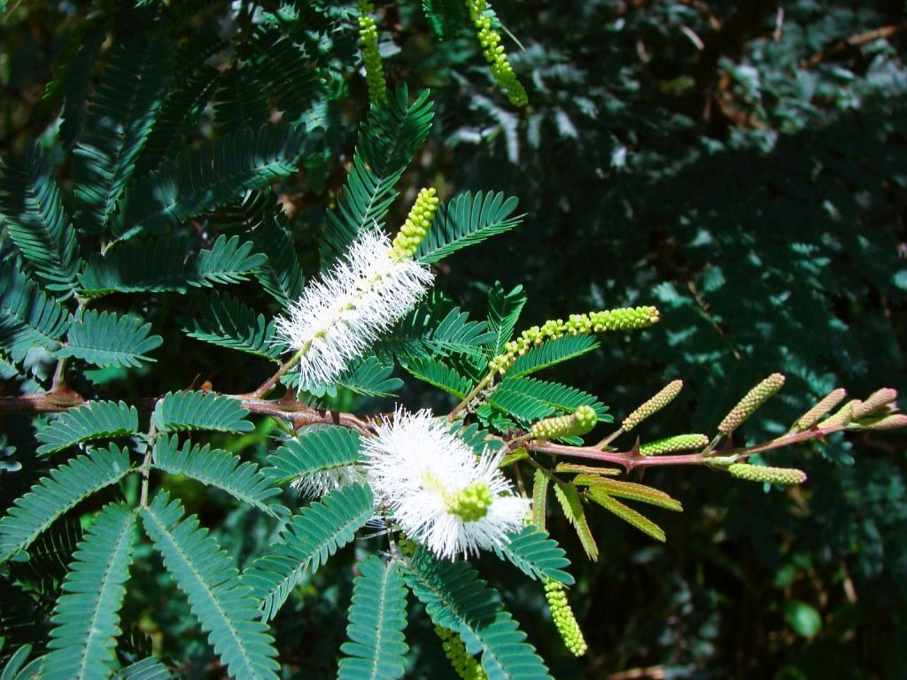

Por onde você quer começar?
Cada caminho tem a sua página.

Conhecer
Biblioteca Viva
43 plantas com nome científico, uso tradicional e cuidados.
Explorar as plantas →
Levar para casa
Loja
Sais de ervas, muiraquitãs, difusores e plantas vivas.
Ver os produtos →
Aprofundar
Artigos
Jurema, muiraquitã, fases da lua e os Traços do Invisível.
Ler os artigos →